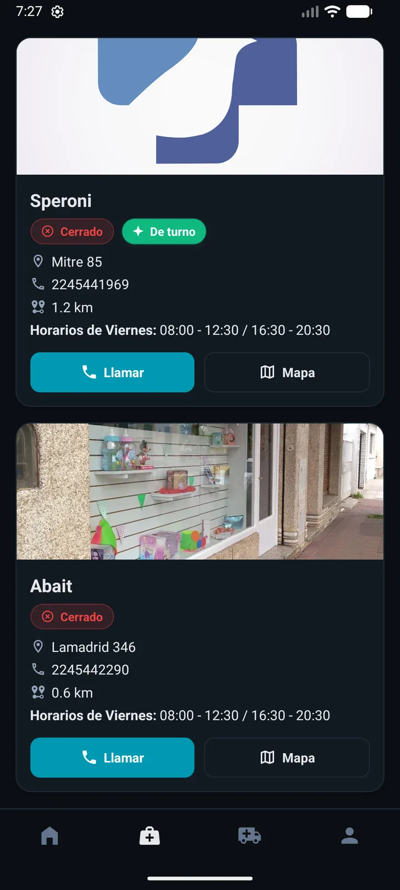
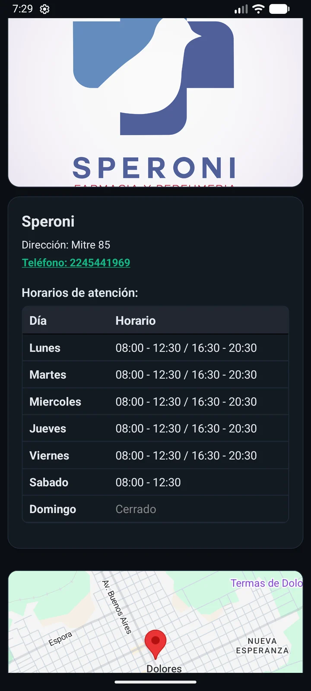

Dolores · Buenos Aires · Argentina
Farmacia de turno en Dolores, siempre actualizada.
Consultá qué farmacia está de turno en Dolores hoy, esta noche o mañana. Datos oficiales, actualizados 24hs. Gratis para Android, iPhone y Web.
Sin complicaciones
¿Cuándo necesitás saber la farmacia de turno en Dolores?
BenFarma responde en segundos, sin publicidad ni registro.
De noche o el fin de semana
Sabés al instante qué farmacia abre en Dolores fuera del horario habitual.
Emergencia médica
Accedés a la dirección, teléfono y horario de la guardia activa sin perder tiempo.
Widget sin abrir la app
Mirá la farmacia activa desde la pantalla de inicio de tu teléfono.
La app en acción
Así se ve BenFarma en Dolores


Para vecinos de Dolores
Descargá BenFarma ahora
Gratuita. Sin publicidad. Sin registro. Datos actualizados cada 24hs desde la administración de Dolores.
Preguntas frecuentes
Farmacia de turno en Dolores — FAQ
¿Dónde veo la farmacia de turno en Dolores hoy?
Descargá BenFarma (Android, iPhone o Web), seleccioná Dolores y ves la farmacia de turno actualizada en tiempo real, con dirección y horario.
¿Cuánto cuesta la app?
BenFarma es completamente gratuita, sin publicidad intrusiva y sin registro obligatorio.
¿Cómo sé si hay guardia farmacéutica en Dolores esta noche?
BenFarma muestra el turno activo y la guardia próxima, actualizado directamente desde la administración local de Dolores.
¿Tiene widget para ver el turno sin abrir la app?
Sí. BenFarma incluye un widget para la pantalla de inicio de Android que muestra la farmacia de turno activa en Dolores sin necesidad de abrir la aplicación.
¿La información es oficial?
Sí. Los datos de turnos y avisos son cargados por la administración local de Dolores, Buenos Aires.